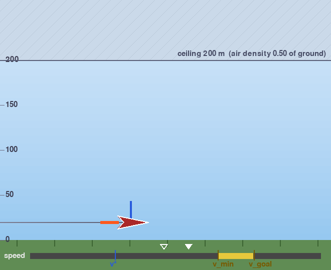
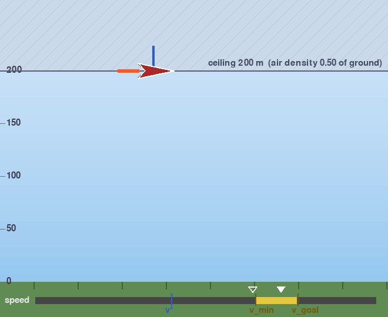
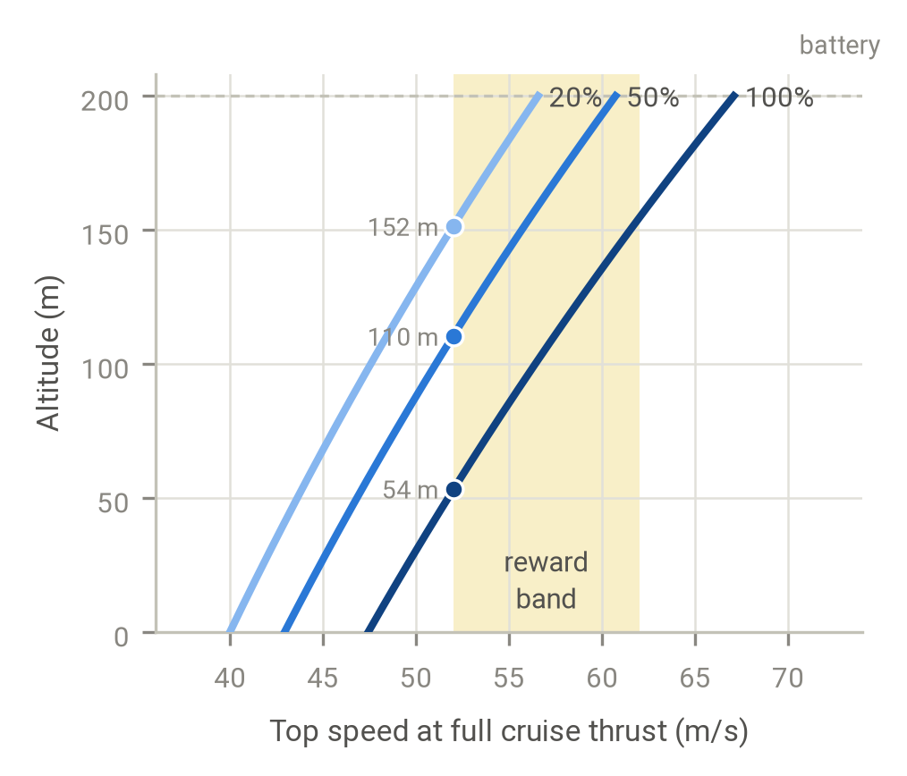

The environment
A plane whose battery is hidden from the pilot and drained by the pilot's own thrust.
An autogenic context
Contextual reinforcement learning usually studies contexts that the environment imposes: gravity, mass, friction. The agent cannot change them, and they stay fixed during an episode. This project studies the other kind, which Biedenkapp (2026) calls autogenic: a context that the agent's own behaviour creates and changes.
Our example is a plane's battery. The battery limits how hard the cruise motor can push, and every bit of thrust drains it. A good pilot must know how much is left: with a full battery it can fly fast; with a weak one it must fly slowly to survive the 35-second mission. But the battery is hidden. It shows in the plane's motion only while the motor runs at its limit, so finding out how much battery is left costs battery. Observing the context changes it.
BatteryPlane
A 2D point-mass plane with a lift motor, a cruise motor, a wing and a battery. Every flight is a 35-second mission (700 steps of 0.05 s). It starts at 30–120 m and 0–30 m/s, with a battery drawn between 20% and 70%, the range where rationing matters.
- y
- altitude, 0–200 m (the ceiling)
- vx
- forward speed (m/s)
- vy
- climb rate (m/s)
- b
- battery charge, 0–1
- τ
- time left, from 1 down to 0
- ε
- sensor noise on the speed reading, ±5 m/s (Gaussian), fresh every step
- b
- not observed: the agent never sees its battery
Altitude and speeds are scaled to about 0–1 (÷200 m, ÷60 m/s).
- ax
- cruise motor: thrust 20·ax m/s², capped at ±(11.5 + 6.5 b). The battery sets the cap.
- ay
- lift motor around level flight: 0 holds the altitude, positive climbs, negative descends
- Air thins with altitude: its density halves from the ground to the ceiling, and drag grows with density × speed². Up high, the same thrust holds a higher speed.
- Thrust drains the battery: every step costs (ax² + ay²)/g² × Δt/E of charge, for the thrust actually delivered (a full battery could hover for E = 100 s).
- Reward: each step earns up to 1 for speed inside the band 52–62 m/s (0 below 52, 1 from 62), plus a smaller bonus that grows with speed. A flight that runs the battery empty or hits the ground loses 300.
Why climb
The reward starts at 52 m/s, and near the ground the plane cannot get there: the air is thick, and drag balances even a full battery's thrust at 47 m/s. Higher up the air is thinner, so the same motor pushes the plane faster. Climbing costs some battery, but it is the only way to earn the speed reward, and the weaker the battery, the higher the plane must go.


Real frames from the environment's renderer: 8 seconds at full cruise throttle with a 60% battery, once low and once after climbing to the ceiling. The sky turns paler as the air thins. The speed bar shows the true speed (filled marker), the agent's noisy reading (hollow marker) and the reward band (yellow). The plane is drawn red while its cruise motor runs at the battery's limit, the only time the battery shows in the motion.

A test of autogenic context
- The context matters: the best hand-written pilot that cannot see the battery earns 36% less than one that can, and learned agents without memory gain 130–235 points from seeing it.
- The context is hidden: below the motor's limit, the plane's motion does not depend on the battery at all.
- The context is autogenic: only the agent's own thrust drains it, and probing it (flying at the limit) is exactly what drains it fastest.